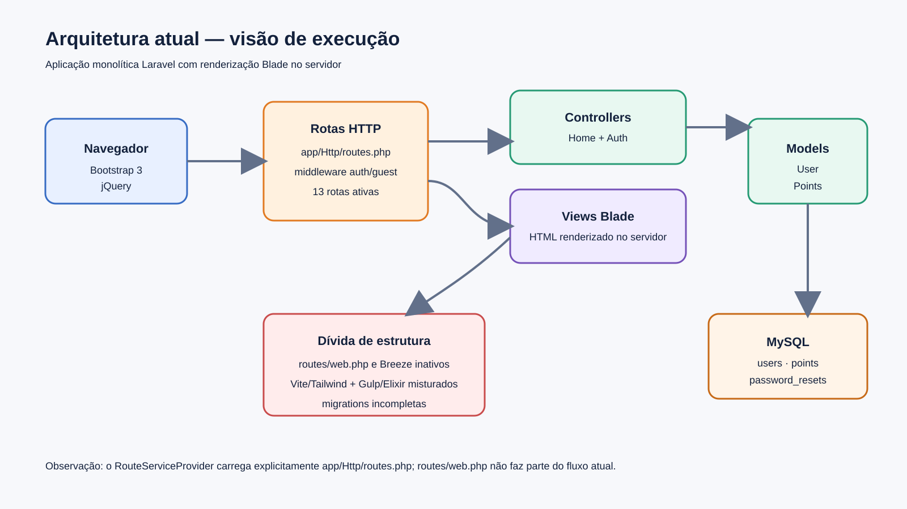
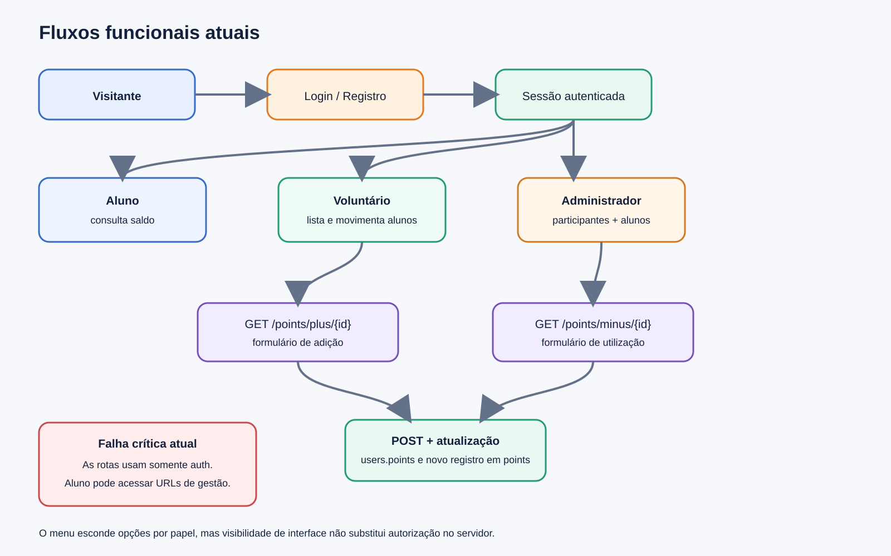
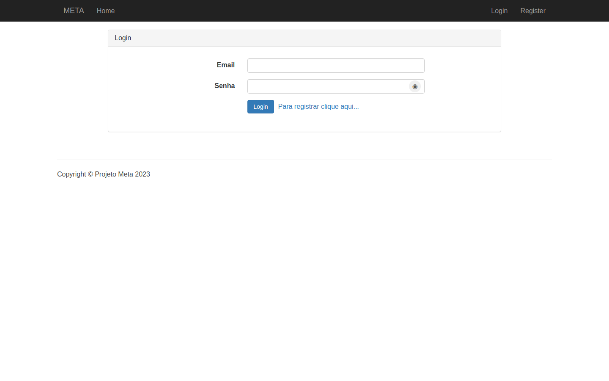
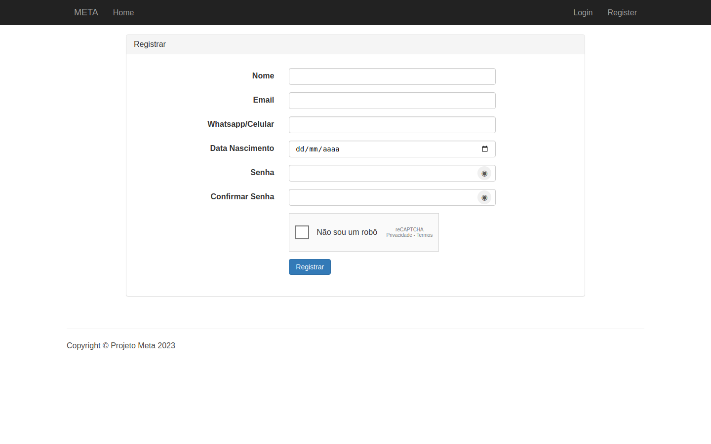
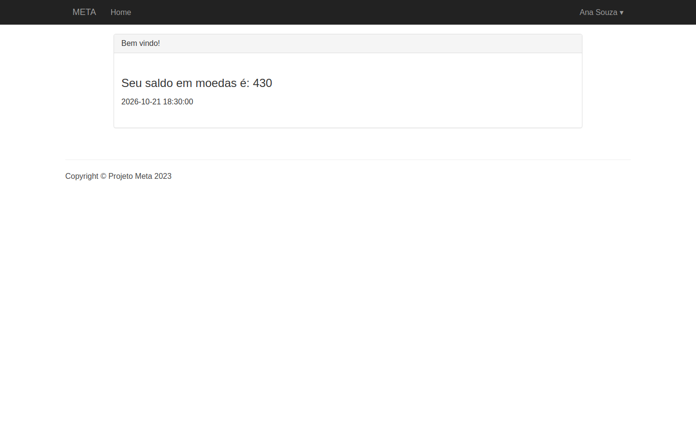
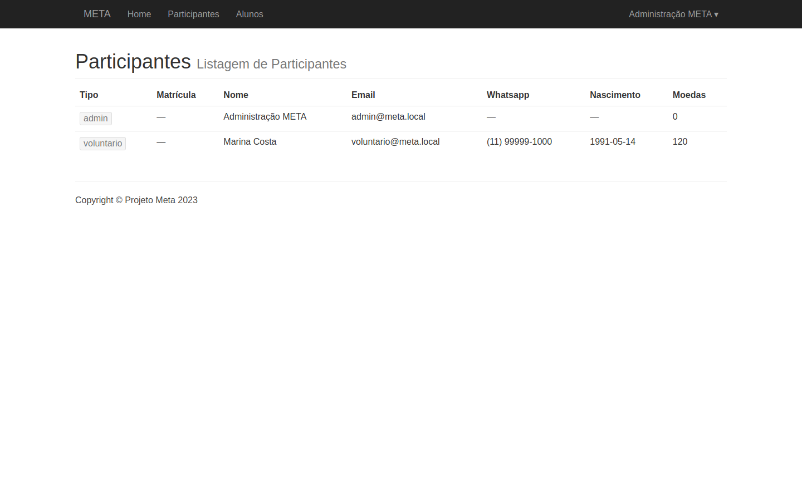
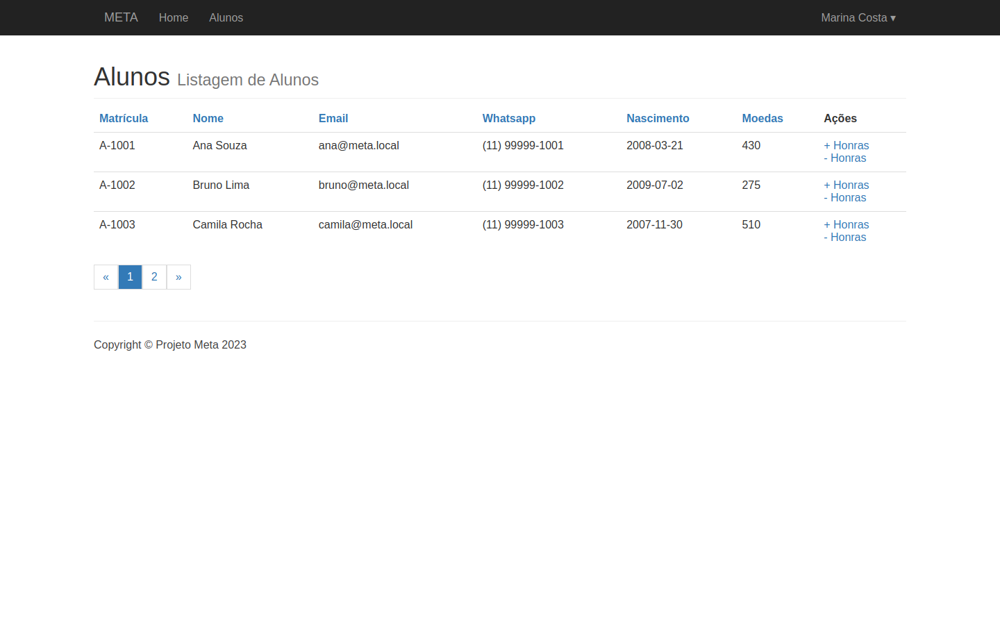
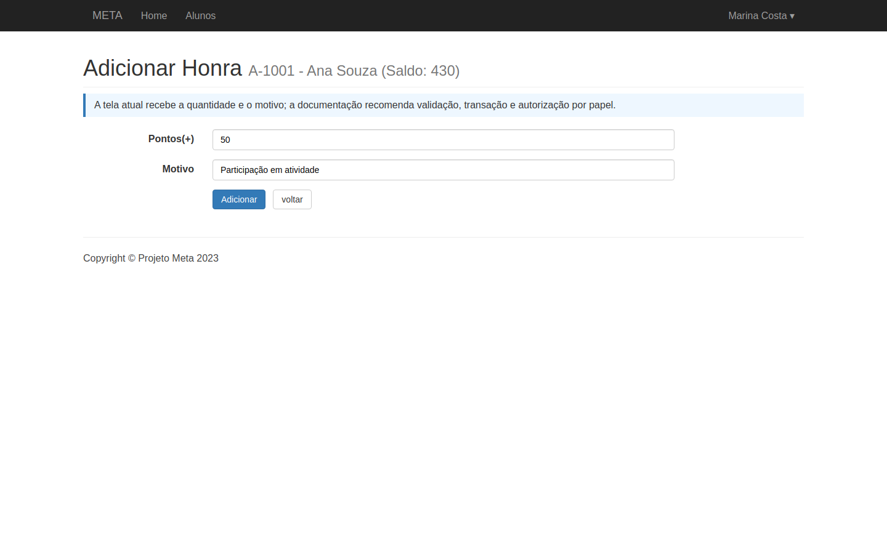
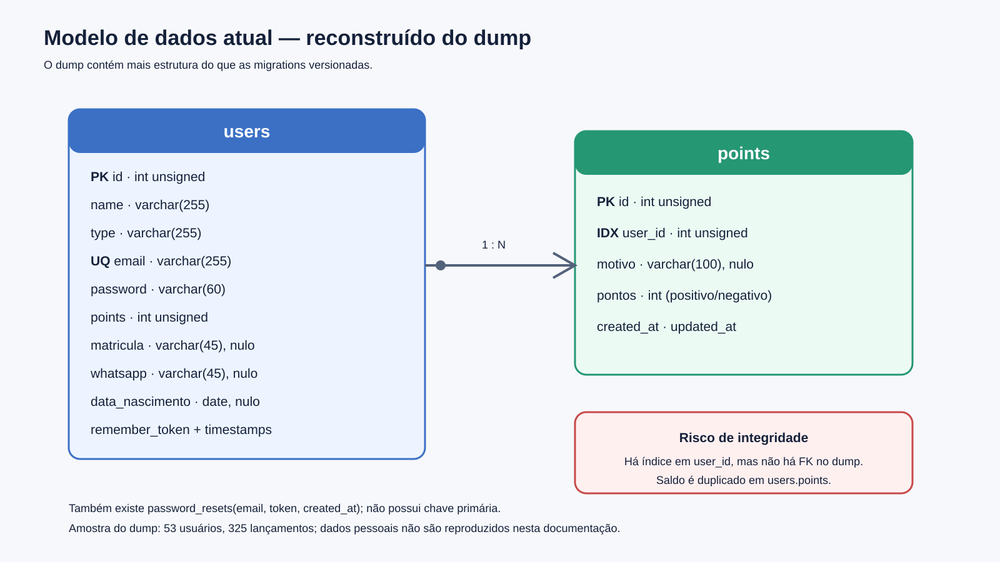
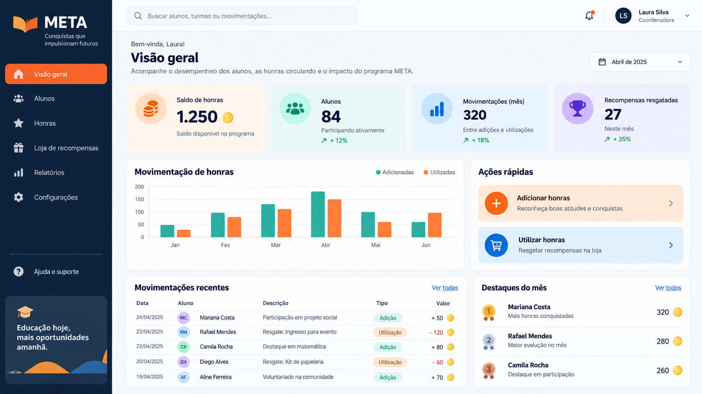

Estrutura, modelagem de dados, telas, fluxos, instalação, auditoria de riscos e caminhos de modernização.
Laravel · Sistema de honras/moedas
Snapshot: commit 369302d Branch: master
Data da análise: 21/10/2026 Escopo: código e dump local
Leitura rápida
Sumário executivo
O META é um monólito Laravel que cadastra participantes, mostra o saldo de alunos e permite a voluntários/administradores adicionar ou utilizar “honras”. O núcleo é pequeno, mas a base combina estruturas de várias gerações do Laravel e não é reproduzível somente pelas migrations.
13rotas ativas
53usuários no dump
325lançamentos no dump
Risco crítico de autorização. O menu esconde funções por perfil, porém `/admin`, `/alunos` e `/points/*` exigem apenas autenticação. Um aluno autenticado pode chamar URLs administrativas diretamente.
O que funciona
Artisan inicializa com o vendor presente.
A lista de 13 rotas é gerada.
Login, cadastro, saldo, listagens e movimentação estão implementados.
O esquema do dump é simples e migrável.
O que impede evolução segura
Laravel 8 fora de suporte.
Migrations incompletas.
Testes quebrados antes da execução.
Front-end duplicado/incompleto.
Segredos e dados pessoais mal protegidos.
Recomendação
Conter imediatamente autorização, segredos, dump e consistência de saldo. Em seguida, migrar para uma base nova em Laravel 13 com PHP suportado, preservando o monólito e separando os módulos de autenticação, alunos, pontos e recompensas. Uma SPA ou reescrita em outra linguagem só se justifica por estratégia organizacional ou roadmap mobile.
A análise cobre arquivos versionados, dependências instaladas, views, controllers, modelos, configurações, histórico Git e o dump `Meta20241130.sql`. O snapshot analisado está no commit 369302d; o dump foi concluído em 30/11/2024.
Foram executados comandos de diagnóstico somente leitura sobre a aplicação e produzidos artefatos novos dentro de docs/. O banco remoto indicado no `.env` não foi acessado. O dump foi analisado apenas de forma agregada.
Critério de evidência. “Atual” significa observado no fluxo realmente carregado por `RouteServiceProvider`; “legado/inativo” significa presente no repositório, mas sem ligação com as rotas efetivas; “proposta” é recomendação futura.
2. Produto e perfis
O sistema apoia o Projeto META em uma economia interna de reconhecimento. Alunos acumulam honras/moedas por atividades e podem utilizá-las. O sistema registra um saldo no usuário e um histórico de lançamentos.
Perfil
Experiência pretendida
Estado no código
Aluno
Registrar, autenticar e consultar o próprio saldo.
Implementado.
Voluntário
Listar alunos; adicionar/utilizar honras.
Visível no menu, sem autorização server-side.
Administrador
Funções do voluntário e lista de participantes.
Visível no menu, sem autorização server-side.
Cancelou
Conta inativa/cancelada.
Aparece no dump como `type`; não há regra específica.
Estado observado
3. Arquitetura atual

Figura 1 — Fluxo de execução real: navegador, rotas antigas, controllers, Blade/Eloquent e MySQL.
A aplicação é um monólito renderizado no servidor. O request entra em `public/index.php`, inicializa o framework, passa pelos middlewares globais e encontra rotas em app/Http/routes.php. Controllers Eloquent leem/escrevem MySQL e retornam Blade. Bootstrap 3 e jQuery são servidos diretamente de public/.
Ponto decisivo: `RouteServiceProvider::map()` inclui `app/Http/routes.php`. Assim, `routes/web.php`, `routes/auth.php`, controllers do Breeze, componentes Tailwind e várias views modernas não participam do sistema atual.
Back-end efetivo
Laravel 8.83.27
`HomeController` e `AuthController` legado
`App\User` e `App\Points`
sessão e CSRF do Laravel
MySQL
Front-end efetivo
Blade clássico
Bootstrap 3
jQuery local
CSS `3-col-portfolio.css`
JavaScript inline para senha
Código e dependências
4. Estrutura do repositório
app/
├── Http/Controllers/ HomeController + autenticação duplicada
├── Http/routes.php rotas efetivamente carregadas
├── User.php usuário/autenticação
└── Points.php histórico de honras
database/
├── migrations/ apenas users e password_resets
└── seeds/ seeder vazio
resources/views/
├── app.blade.php layout Bootstrap ativo
├── home.blade.php saldo
├── auth/ telas antigas + telas Breeze
└── admin/users/ listagens e formulários
routes/ web.php/auth.php presentes, mas inativos
public/ Bootstrap, jQuery, CSS e logo
dump/ snapshot SQL com dados pessoais
tests/ testes antigos e novos incompatíveis
Sobreposição de gerações
Tema
Legado
Mais novo
Efeito
Rotas
`app/Http/routes.php`
`routes/web.php`
Somente o legado é carregado.
Autenticação
Laravel UI/AuthController
Breeze controllers
Duplicidade e confusão de manutenção.
UI
Bootstrap 3/jQuery
Tailwind/Alpine
Duas bibliotecas, uma inativa.
Build
Gulp/Elixir
Vite
Ambos incompletos; não há script npm.
Testes
`TestCase` global/visit()
`Tests\*`/factories
PHPUnit encerra com erro fatal.
Dependências diretas relevantes: Laravel UI 3.4.6, Breeze 1.10.0, Laravel Collective HTML 6.4.1, Guzzle 7.8.1 e PHPUnit 9.6.10. `composer.json` é válido, mas contém bibliotecas antigas de desenvolvimento e scripts herdados.
Comportamento
5. Rotas e fluxos funcionais

Figura 2 — Perfis e fluxo de lançamento; a caixa vermelha destaca a ausência de autorização por papel.
Método
URI
Ação
Middleware
GET
/
saldo do usuário
auth
GET
/admin
participantes
auth
GET
/alunos
alunos
auth
GET/POST
/points/plus...
adicionar
auth
GET/POST
/points/minus...
utilizar
auth
GET/POST
/auth/login
login
guest
GET/POST
/auth/register
cadastro
guest
GET
/auth/logout
logout
—
GET
/clear-cache
cache operacional
pública
5.1 Cadastro e autenticação
Visitante informa nome, e-mail, WhatsApp, nascimento e senha.
Controller verifica reCAPTCHA com `file_get_contents`.
Somente nome, e-mail e senha são validados.
Usuário é criado com `type = aluno`, autenticado e redirecionado.
O login usa guard de sessão e regenera o identificador em caso de sucesso. Logout por GET permite acionamento sem intenção e deve virar POST com CSRF. Não há rate limit ligado às rotas antigas.
5.2 Consulta e listagens
A home exibe `Auth::user()->points`. `/admin` retorna perfis diferentes de aluno. `/alunos` retorna somente alunos e ordena pelo parâmetro `order`, sem lista permitida. Há paginação de 50 registros, mas sem pesquisa ou filtros.
5.3 Adição/utilização de honras
O operador abre o formulário para um `id`.
Envia quantidade e motivo.
O controller soma/subtrai `users.points` e salva.
Depois cria um registro positivo/negativo em `points`.
Janela de inconsistência: saldo e histórico são duas gravações sem transação. Falha no segundo passo, clique repetido ou concorrência pode produzir divergência. Não se registra quem executou a operação.
Regra-alvo
Validar quantidade e motivo, autorizar o papel, abrir transação, bloquear a conta do aluno, conferir saldo mínimo quando aplicável, inserir lançamento imutável com operador/idempotência e atualizar saldo de forma atômica.
Interface atual
6. Telas
Capturas reconstruídas fielmente a partir dos templates Blade e CSS atuais. Os dados são fictícios e o reCAPTCHA é representado sem chamada externa.

Tela de login.

Cadastro de aluno, com WhatsApp, nascimento e reCAPTCHA.

Home do aluno: saldo e data/hora crua.

Lista administrativa de participantes.
6.1 Gestão de alunos e honras

Lista de alunos com ordenação por links e ações textuais de adição/utilização.

Formulário de lançamento. O aviso azul foi incluído apenas na captura documental para indicar as recomendações de segurança.
Problemas de experiência
Interface pouco responsiva para tabelas.
Sem pesquisa, filtros ou feedback de carregamento.
Ações `+/-` ambíguas e distantes do contexto.
Data/hora sem localização.
Sem histórico ou comprovante.
Sem confirmação de operação sensível.
Caminho do ícone de senha aponta fora do webroot.
JS relativo pode quebrar em rotas aninhadas.
Persistência
7. Modelagem de dados

Figura 3 — Modelo reconstruído do dump; a linha 1:N é conceitual, pois falta FK física.
47alunos
204créditos
121débitos
Métricas agregadas: 53 usuários (47 aluno, 2 admin, 4 cancelou), 325 lançamentos, nenhum órfão no snapshot, 4 usuários sem histórico e 1 saldo diferente da soma dos lançamentos. A divergência pode refletir saldo inicial ou alteração manual e precisa de conciliação.
Incompatibilidade migrations × banco
A migration de `users` cria nome, tipo, e-mail, senha e pontos; não cria matrícula, WhatsApp ou nascimento. Não existe migration de `points`. Portanto, `php artisan migrate` não produz um banco compatível com o código.
7.1 Modelo-alvo recomendado
Entidade
Responsabilidade
Decisão-chave
`users`
identidade, e-mail, senha e estado
não armazenar regra de saldo
`roles` / permissões
student, volunteer, admin
papel separado de status
`student_profiles`
matrícula, telefone, nascimento
dados pessoais isolados
`point_accounts`
conta e saldo projetado
uma conta por aluno
`point_transactions`
razão imutável
valor, tipo, motivo, operador, idempotência, saldo após
`rewards`
catálogo e estoque
estado/publicação/preço
`redemptions`
resgates e estornos
processo auditável
`audit_logs`
ações administrativas
ator, alvo, antes/depois, IP
Princípio contábil: lançamento é imutável; correção gera estorno. O razão é a fonte de verdade. Se houver saldo materializado, ele é uma projeção atualizada na mesma transação e reconciliada automaticamente.
Privacidade e LGPD
WhatsApp e nascimento são dados pessoais. Definir finalidade, base legal, minimização, acesso por função, retenção, exportação/retificação e anonimização. Ambientes de desenvolvimento devem usar seed fictício; nunca cópia integral da produção.
Operação
8. Instalação e ambiente
Recuperação do legado
Para máxima compatibilidade histórica, PHP 8.1 reproduz a matriz do Laravel 8, mas já está fora de suporte e serve somente para ambiente isolado. O snapshot inicializou Artisan com PHP 8.3.6, porém essa combinação requer testes e não deve ser tratada como suporte oficial.
Pré-requisitos: Composer 2, MySQL 8, extensões PHP Ctype/cURL/DOM/Fileinfo/Mbstring/OpenSSL/PDO Session/Tokenizer/XML e servidor com raiz em `public/`.
Bloqueio atual: migrations não bastam. Importar o dump bruto só é aceitável em recuperação autorizada, banco privado e com controles de dados. Para desenvolvimento, crie migrations e seeders fictícios.
8.1 Produção modernizada
Laravel 13 e PHP 8.5 atualizado (ou versões suportadas na data do deploy);
Nginx/Apache/FrankenPHP apontando para `public/`, HTTPS e `APP_DEBUG=false`;
MySQL 8 com usuário de privilégio mínimo;
segredos em cofre/variáveis, backup criptografado e restauração testada;
configuração/rotas/views em cache no deploy;
logs centralizados, monitoramento de erros, health check e alertas;
pipeline com testes, análise estática, auditoria de dependências e rollback.
Hoje os assets ativos já estão compilados. `npm install` não resolve o projeto como está: todas as dependências estão ausentes, Vite plugin não está declarado, `resources/js/bootstrap.js` não existe e não há scripts. A migração deve escolher uma única cadeia (Vite + Tailwind/Bootstrap atual) e remover Gulp/Elixir.
Qualidade e segurança
9. Auditoria: riscos e correções
Prio.
Constatação
Impacto
Correção
P0
Rotas administrativas usam só `auth`
aluno pode gerir dados/saldos
policies/gates + testes negativos
P0
`/clear-cache` pública
abuso operacional/DoS
remover; usar CLI de deploy
P0
`APP_KEY` padrão no código
compromete criptografia se env falhar
sem fallback; revogar/rotacionar
P0
dump com PII/hashes fora do ignore
vazamento e não conformidade
retirar, criptografar, retenção
P0
saldo + histórico sem transação
divergência/perda concorrente
transação, lock/atomicidade, idempotência
P0
Laravel 8 sem suporte
falhas sem correção
migrar para versão suportada
P1
migrations incompletas
deploy não reproduzível
schema completo + seeds
P1
entradas sem validação server-side
erro/abuso de saldo
Form Requests e regras de domínio
P1
`order` livre
erros e superfície SQL
allow-list de colunas
P1
reCAPTCHA via `file_get_contents` GET
segredo em logs/indisponibilidade
HTTP client POST, timeout e tratamento
P1
logout GET
ação acionável por terceiros
POST + CSRF
P1
testes incompatíveis
regressão invisível
baseline novo de testes
P2
assets e telas duplicados
custo de manutenção
uma stack e remoção do morto
9.1 Erros concretamente reproduzidos
Comando
Resultado
Leitura
php artisan --version
Laravel 8.83.27
framework inicializa com vendor atual.
php artisan route:list
13 rotas
confirma `app/Http/routes.php`.
composer validate
válido
sintaxe do manifesto está correta.
./vendor/bin/phpunit
fatal
`Tests\TestCase` não encontrado; testes misturados.
npm ls --depth=0
ELSPROBLEMS
todas as dependências declaradas ausentes.
php artisan migrate:status
conexão indisponível
o ambiente aponta para banco externo; não foi acessado.
Correções adicionais
`points` aceita motivo nulo no banco, mas formulário exige; alinhar contrato.
`users.points` é unsigned; débito maior que saldo pode falhar ou depender do modo SQL.
não existe FK `points.user_id`; adicionar depois de validar órfãos.
o usuário recém-cadastrado depende de defaults implícitos para `points`/matrícula.
timezone está em UTC e `APP_URL` ignora o `.env`.
relação `historyPoints` existe, mas não há extrato na interface.
Produto
10. Melhorias funcionais e de telas
Aluno
saldo destacado e extrato filtrável
explicação de cada lançamento
catálogo e resgate de recompensas
comprovantes e notificações
Equipe
busca/filtros/exportação
lançamento com confirmação
lote de créditos com prévia
relatórios e conciliação
Administração
RBAC e estados de conta
auditoria antes/depois
aprovação de ajustes
estoque/recompensas
Qualidade UX
responsividade real
WCAG/teclado/contraste
feedback e estados vazios
formatação pt-BR
Princípios de tela
Usar ações nomeadas (“Adicionar honras”, “Registrar utilização”), mostrar aluno/saldo/efeito antes de confirmar, não depender de cor para estado, impedir envio duplicado e devolver identificador auditável. Tabelas devem virar cartões no mobile ou permitir rolagem controlada.
10.1 Conceito de interface modernizada

Mockup conceitual gerado para a documentação. Não representa funcionalidade implementada. Dados e nomes são fictícios.
Elementos aproveitáveis
navegação por módulos
indicadores de saldo/alunos/movimentações
ações rápidas contextualizadas
tabela de transações recentes
Ajustes antes de implementar
validar identidade visual oficial
reduzir densidade por perfil
testar acessibilidade e mobile
não expor rankings sem regra/consentimento
Tecnologia
11. Opções de migração
Opção
Adequação
Vantagens
Riscos
Upgrade 8→13 incremental
Preservar base e reduzir reescrita
mudanças menores por etapa
dívida convive por mais tempo; saltos sucessivos
Novo Laravel 13 + Blade/Livewire
Recomendado para escopo atual
base limpa, operação simples, entrega rápida
exige importador e paridade testada
Laravel API + Vue/React
SPA, mobile e alta interação
API reutilizável e UX rica
mais complexidade e custo
Django/NestJS/.NET
Padrão estratégico da equipe
alinhamento ao ecossistema interno
reescrita integral e maior regressão
Decisão sugerida: novo monólito modular Laravel 13. O domínio e o volume de telas não justificam microserviços. Use Blade/Livewire para produtividade; Inertia/Vue somente se as interações futuras exigirem.
Alvo técnico
PHP 8.5 com patch corrente; Laravel 13;
Vite e uma única biblioteca visual;
Form Requests, Services/Actions e Policies;
MySQL 8 com migrations completas;
Pest ou PHPUnit moderno;
CI, análise estática, formatter e auditoria de dependências;
observabilidade e backups testados.
Em 21/10/2026, a documentação oficial informa PHP ≥8.3 para Laravel 13. A versão PHP deve ser escolhida pela janela de suporte e atualizada para o patch de segurança corrente.
Execução
12. Roadmap recomendado
Fase 0 · 1–3 diasAutorização, rota pública, segredos, dump, validação e transação.
Fase 1 · 3–5 diasMigrations, seed fictício, testes críticos e conciliação.
Fase 2 · 1–2 semanasNova base, RBAC, alunos, razão, layout e importador.
Fase 3 · 3–5 diasStaging, aceitação, backup, corte e rollback.
Critérios de aceite mínimos
aluno recebe 403 ao tentar qualquer função de gestão;
cada lançamento tem operador, motivo, valor e idempotência;
saldo e razão permanecem consistentes sob concorrência;
instalação nasce de migrations e seed sem dump;
testes de autenticação, autorização e saldo passam no CI;
nenhum segredo ou dado real aparece no repositório/log;
backup é restaurado com sucesso em ensaio;
telas funcionam por teclado e em viewport móvel.
Estratégia de corte
Congelar gravações no legado, executar backup, importar usuários e razão, gerar relatório de divergências, validar amostra com responsáveis, apontar tráfego ao novo sistema e manter janela curta de rollback. Evitar escrita dupla sem desenho explícito de reconciliação.
Estimativas assumem equipe pequena e regras próximas ao código atual. Catálogo, estoque, integrações e aprovações podem ampliar o prazo.
Confiabilidade
13. Validações e limitações
O que foi validado
estrutura e fluxo de carregamento;
rotas registradas pelo framework;
versões diretas instaladas via Composer;
controllers, models, Blade, migrations e configurações;
schema e métricas agregadas do dump;
execução de Composer, Artisan, PHPUnit e npm;
capturas comparadas aos templates atuais.
Limitações
não houve acesso ao banco remoto nem à aplicação publicada;
o ambiente local não possuía um banco configurado acessível;
as telas autenticadas foram reconstruídas dos templates, não capturadas com dados reais;
não foi feito teste de carga, pentest ou auditoria externa de dependências;
regras organizacionais e LGPD precisam ser confirmadas com responsáveis.
Arquivos complementares
A pasta contém guias em Markdown de instalação, dados, fluxos, inventário e modernização, além de SVGs e PNGs reutilizáveis.
Fontes
14. Referências e rastreabilidade
Fontes internas
`app/Providers/RouteServiceProvider.php` e `app/Http/routes.php` — rotas reais.
`app/Http/Controllers/HomeController.php` — listagens e lançamentos.
`app/Http/Controllers/Auth/AuthController.php` — login, cadastro e reCAPTCHA.
`app/User.php`, `app/Points.php` e migrations — modelos e schema versionado.
`dump/Meta20241130.sql` — schema observado e agregados.